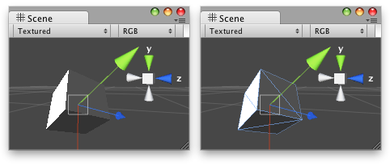

EditorUtility.SetSelectedWireframeHidden
Description 描述
Sets whether the selected Renderer's wireframe will be hidden when the GameObject it is attached to is selected.

Cube with the wireframe hidden/shown.
using UnityEngine; using UnityEditor;
// Shows / hides the wireframe of the objects in the Scene.
class ShowHideWireFrame : Editor { [MenuItem("Examples/Show WireFrame %s")] static void Show() { foreach (GameObject obj in Selection.gameObjects) { Renderer rend = obj.GetComponent<Renderer>();
if (rend) { EditorUtility.SetSelectedWireframeHidden(rend, false); } } }
[MenuItem("Examples/Show WireFrame %s", true)] static bool CheckShow() { return Selection.activeGameObject != null; }
[MenuItem("Examples/Hide WireFrame %h")] static void Hide() { foreach (GameObject obj in Selection.gameObjects) { var rend = obj.GetComponent<Renderer>();
if (rend) { EditorUtility.SetSelectedWireframeHidden(rend, true); } } }
[MenuItem("Examples/Hide WireFrame %h", true)] static bool CheckHide() { return Selection.activeGameObject != null; } }